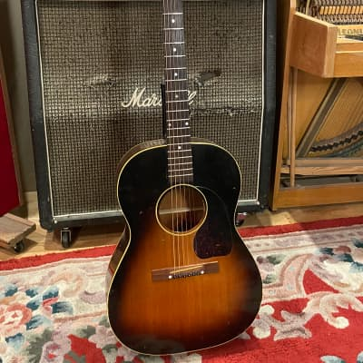
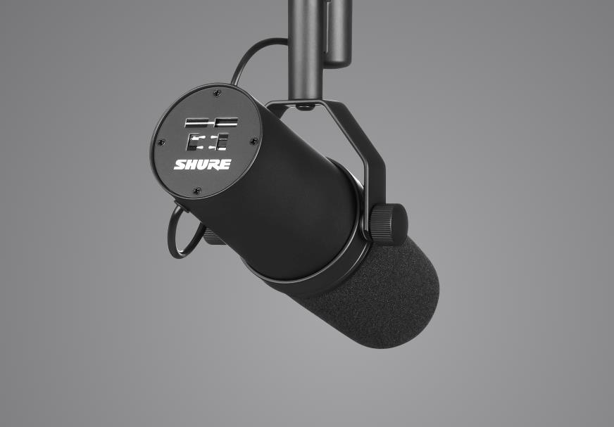

Guitar
I have been playing guitar for 12 years. I started playing back in 2010, when my cousin started playing bass, so that we could play together. I have played for multiple bands including church bands, country bands, and rock bands. I am now pursuing my own musical journey through playing folk/rock music.

Vocals
I have been singing for about 5 years. I have performed at different venues in Southern Illinois, and am looking to pursue performing more now that I have moved to St. Louis. I used to perform regularly at a coffee shop in my hometown. I am currently training with a vocal coach out of Rochester, NY. I enjoy singing the most out of all of my musical endeavors.
